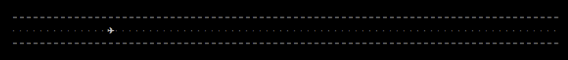

Unit testing JavaScript
using Mocha and Node.js
Josh Mock
- Senior JavaScript architect at Emma
- Twitter: @JoshMock
- Email: josh@joshmock.com
What is unit testing?
- Write code to test code
- Ensures code works as expected
- Granular, single-focus assertions
- Not a substitute for QA
Why unit test?
- Confidence
- Easier refactoring
- Less regression
- Less complexity
- TDD is fun!
What is Node.js?

Install Node.js
OS X (with Homebrew installed):
brew install nodeWhat is Mocha?
Install Mocha
npm install -g mochaTest some code!
var Car = function () {
this.make = "Honda";
this.model = "Civic";
};
var assert = require("assert");
describe("Car", function () {
describe("constructor", function () {
it("should default the car to be a Honda Civic");
});
describe("makeAndModel", function () {
it("should return a string containing the make and model");
});
});
Run, tests, run

mocha path/to/test/file.js
How to write good tests
- Test results, not internals
- One focus per test
- Testing DOM changes is bold
How to write testable code
Simple, single-purpose functions
// bad
var numbers = {
list: [1, 2, 3],
add: function (newNum) {
this.list.push(newNum);
this.list.sort();
}
};
// good
var numbers = {
list: [1, 2, 3],
add: function (newNum) {
this.list.push(newNum);
},
sort: function () {
this.list.sort();
}
};
Avoid tight coupling of components
var numbers = {
list: [1, 2, 3],
add: function (newNum) {
this.list.push(newNum);
}
};
// bad
var math = {
add: function () {
var total = 0;
for (var i = 0; i < numbers.list.length; i++) {
total += numbers.list[i];
}
return total;
},
average: function () {
return this.add() / numbers.list.length;
}
};
alert(math.average());
// good
var math = {
add: function (numList) {
var total = 0;
for (var i = 0; i < numList.length; i++) {
total += numList[i];
}
return total;
},
average: function (numList) {
return this.add(numList) / numList.length;
}
};
alert(math.average(numbers.list));
Separate business logic from UI
(and avoid anonymous functions/callbacks)
var numbers = [2, 4, 1, 3, 5];
// bad
$("a.sort-numbers").on("click", function (e) {
e.preventDefault();
numbers.sort();
});
// good
var sortNumbers = function (e) {
e && e.preventDefault && e.preventDefault();
numbers.sort();
};
$("a.sort-numbers").on("click", sortNumbers);
Advanced stuff!
Asynchronous tests
var asyncSort = function (numbers, callback) {
setTimeout(function () {
callback(numbers.sort());
}, 10);
};
define("asyncSort", function () {
it("should sort my numbers", function (done) {
asyncSort([1, 3, 2], function (result) {
assert.deepEqual(result, [1, 2, 3]);
done();
});
});
});
Sinon.js
npm install -g sinonSpies
var sinon = require("sinon");
it("runs jQuery.ajax", function () {
sinon.spy($, "ajax");
doAjaxCall();
assert($.ajax.calledOnce);
$.ajax.restore();
});
it("does some thing that takes forever", function () {
someGlobal.slowFunction = sinon.spy();
callSlowFunction();
assert.equal(someGlobal.slowFunction.callCount, 1);
assert(someGlobal.slowFunction.calledWith(1, "two", 3));
});
Stubs
var sinon = require("sinon");
it("returns the age of a person with data stored in the database", function () {
Database.get = sinon.stub().returns({
name: "Joe",
age: 33
});
var getAge = function () {
return Database.get("Joe").age;
};
assert.equals(getAge(), 33);
});
Mocks
var sinon = require("sinon");
it("should get the desired car from the database", function () {
var mock = sinon.mock(Database);
mock
.expects("getCar")
.withExactArgs("Honda Civic")
.once()
var car = new Car();
car.get("Honda Civic");
assert(mock.verify());
});
Fake timers
var sinon = require("sinon");
it("should save after 30 seconds", function () {
var clock = sinon.useFakeTimers();
sinon.spy($, "ajax");
delayedSave();
clock.tick(30001);
assert($.fn.ajax.called);
$.ajax.restore();
});
jsdom and node-jquery
- Test browser-dependent code
- Make Node think it's a browser
- Test jQuery DOM manipulations
-
Go through all stages of grief getting it to work
- Ponder using a browser-based framework instead
Install
npm install -g jsdom && npm install -g jquerySet up
GLOBAL.document = require("jsdom").jsdom();
GLOBAL.window = document.createWindow();
GLOBAL.$ = GLOBAL.jQuery = require("jquery").create(window);
Use
it("should change div background color to blue", function () {
$("body").html('');
$("#mydiv").css("background", "blue");
assert.equal($("#mydiv").css("background"), "blue");
});
- No headless browser
- No GUI running in background
- No guarantees
THE END
Questions?
- Twitter: @JoshMock
- Email: josh@joshmock.com
- github.com/JoshMock/mocha-node-slides